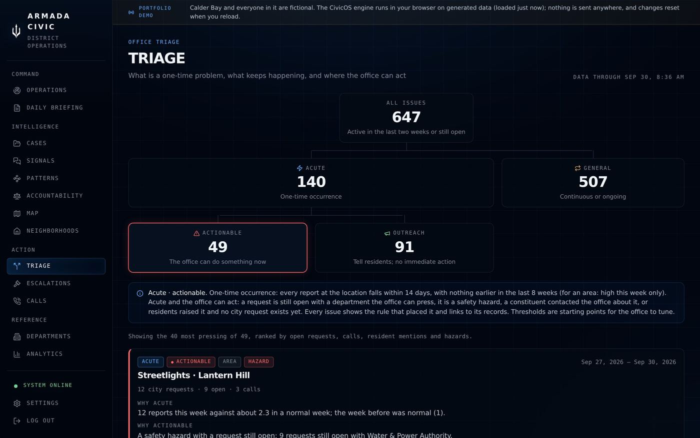
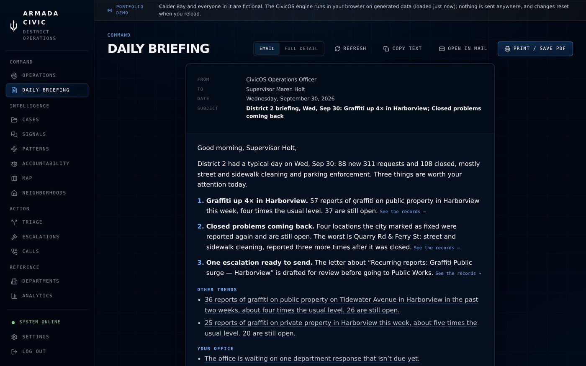
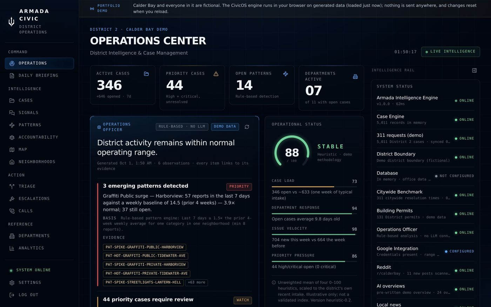
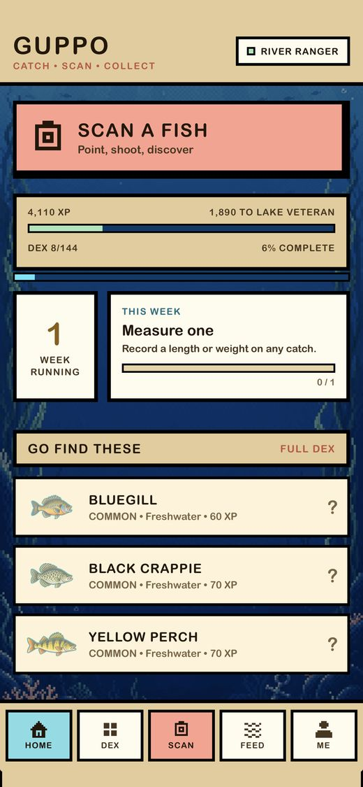
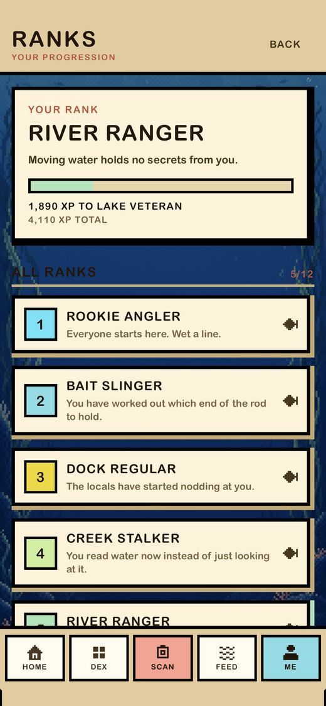
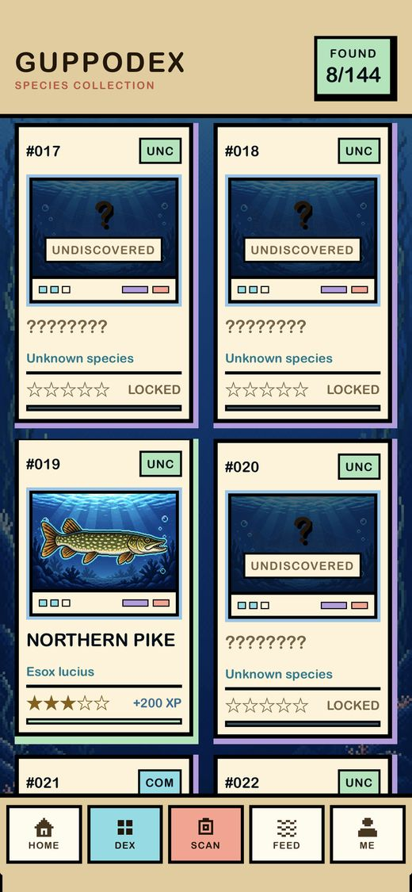
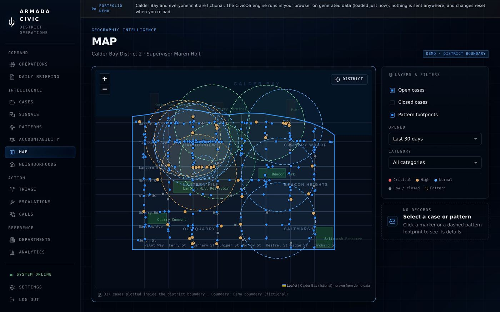
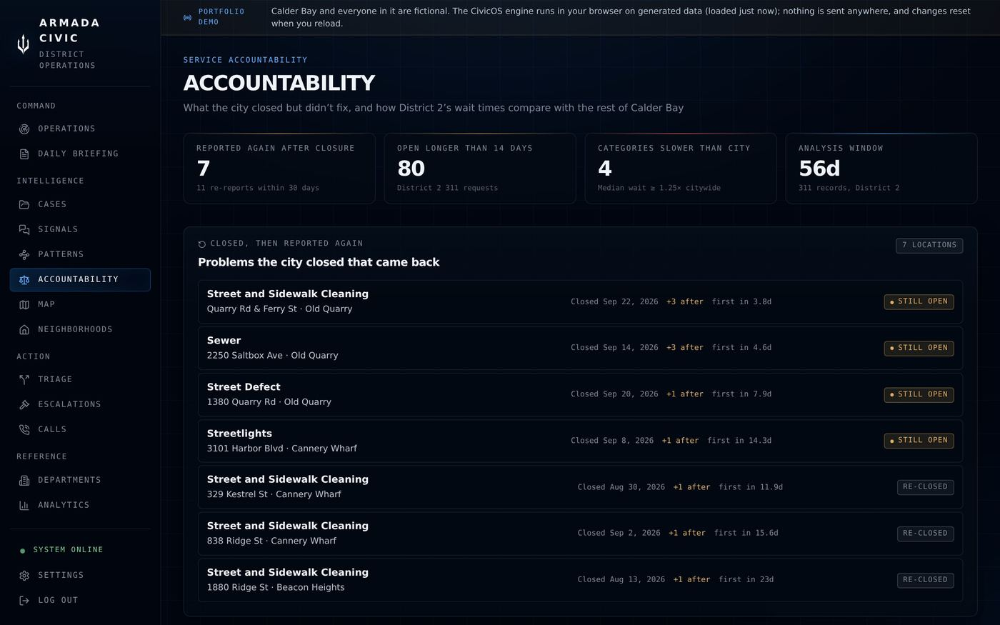
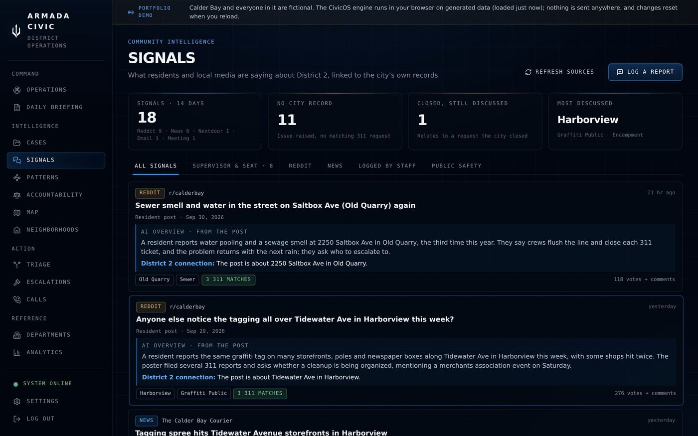
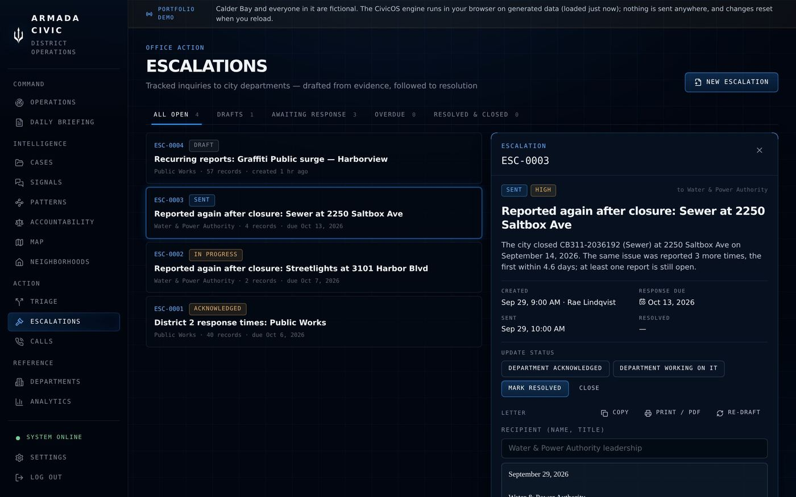

Defense politics
How ideology and domestic politics drive military action, from budgets and procurement in Washington to the nationalist movements shaping Russia's war in Ukraine.
- What ideas justify a war at home?
- Who shapes what comes after?
I'm Julian Zeppa, a product designer, co-founder of Armada Strategic, and political science student at the University of Miami. I design and ship software, from government intelligence tools to consumer apps, and I'm happiest when the problem involves real users and messy data.
Before I designed anything for a district office, I spent a summer working in one, answering constituent calls and tracking cases by hand. The pain points were obvious from the inside.
In practice SF District 2 → Civic.OSCivic.OS turns five data sources into three questions staff ask every morning. Guppo turns 144 species into one collection you can read at a glance.
In practice Civic.OS · GuppoI take ideas all the way to working software, building with AI-assisted development. Civic.OS is in development for a real office, and Guppo is live on the App Store.
In practice 2 products shipped in 2026
Triage
Briefing
OperationsDesigning an intelligence platform that fuses five data sources into one evidence-backed daily briefing.
Read the case study →


A consumer iOS app: photo-based species ID, a collectible 144-species Dex, and privacy-first maps.
See the project →Product designer, co-founder of Armada Strategic, and a political science student who studies how wars are fought, funded and decided.
I'm a product designer and co-founder of Armada Strategic, and I'm finishing a B.A. in political science at the University of Miami. Most of my classes and research focus on defense: how nations decide to build and use military power, and how technology is changing what war looks like.
I didn't take a straight line here. I've worked in a supervisor's office in San Francisco, in law firms in Miami and Los Angeles, at the polls on election day, and behind the counter of a dive shop. Each one taught me how people actually get work done under pressure. I want to bring that, along with what I've learned about defense, to the software analysts and operators rely on.
How ideology and domestic politics drive military action, from budgets and procurement in Washington to the nationalist movements shaping Russia's war in Ukraine.
How violence starts and spreads: insurgency and guerrilla tactics, state collapse, non-state actors and maritime security, and what modern conflicts teach about drones, autonomy and how fast militaries adapt.
The shift toward software-defined defense: new entrants in the industrial base, data and decision-support tools, and how the people using them stay in control.
I work as a research assistant to Professor Costantino Pischedda at the University of Miami, studying how guerrilla insurgencies use conventional and unconventional tactics.
When Desperation Meets Opportunity
A case study of the hijacking of the Maersk Alabama and the capture of Captain Richard Phillips, set against Somalia's collapse after 1991. I argue that piracy isn't random. It's predictable when two conditions meet: opportunity, where weak central governance leaves the sea without rule of law or deterrence, and motivation, where people lose the livelihoods that kept them out of it.
To test that, the paper compares Somalia with piracy in the 17th- and 18th-century Caribbean. There, distant empires left whole territories ungoverned, and the end of privateering in 1713 left skilled seamen without lawful work. Two theatres, centuries apart, show the same pattern.
A Deep Dive Into Russian Ultranationalism
An analysis of Russian ethnonationalism and its role in the war in Ukraine. I trace how the Kremlin's Russkiy Mir ideology, reinforced by Alexander Dugin and the Russian Orthodox Church, turned the idea of a "diasporic empire" into a justification for annexing Crimea and invading Ukraine.
The paper then compares two armed nationalist groups fighting on opposite sides: the Russian Volunteer Corps, which fights for Ukraine and wants a smaller, ethnically homogeneous Russia, and the Russian Imperial Movement, a U.S.-designated terrorist group that wants an even more expansionist one. I close by weighing which scenario is more likely in a post-Putin Russia, and why the outcome of the war decides it.
I've spent years studying how militaries and governments make decisions. Good tools help people make those decisions faster and more safely, with the evidence in front of them. That's the software I want to design.
Two products I designed and shipped in 2026: an intelligence platform for a city council office, and a consumer iPhone app.

MapTriageBriefingOperationsAn intelligence platform for a city council district office. It fuses 311 tickets, the office phone log, local news and Reddit into one operating picture, and each morning answers what is happening, what changed and what needs attention. Every finding links back to the records behind it, and every figure comes from a stated rule.
An iPhone app that turns fishing into a collection. Snap a photo of a catch, Guppo identifies the species and unlocks its card in a 144-species Guppodex, with personal bests, weekly challenges and a catch map that keeps exact spots private by default.
Giving a city council office one clear picture of its district every morning. After I pitched it, the supervisor asked me to keep building it for his office.
In summer 2026 I worked as a legislative intern in San Francisco's District 2 supervisor's office. A district office is the first place residents call when the city lets them down, but staff see the district through four disconnected windows: a phone log in a spreadsheet, 311 tickets in the city's system, local news, and what neighbors post online.
Nobody had time to connect them. So the questions that mattered went unanswered: which problems are growing, which ones the city marked "fixed" without fixing, which departments are falling behind, and where the office can actually make a difference today.
→ One operating picture, with every finding linked to its records.
When I asked how staff decide what to act on, a supervisor described two distinctions. Is a problem acute, a one-time occurrence, or general, continuous and ongoing? And for acute problems, is it actionable, something the office can do now, or does it call for outreach, telling residents with no immediate action?
That became the Triage view. Rather than invent a new scoring system, I turned the office's own decision tree into explicit rules, so the software sorts issues the way staff already think about them.
I worked alongside the whole office, four staff and the supervisor, for the full summer. The biggest finding was simple: staff spent hours entering data by hand, and almost none of it was ever analyzed. The work was tedious, and the records it produced weren't answering anyone's questions.
"Is it a one-time thing or does it keep happening? And can we actually do something about it today?"
The two questions behind every triage decision, paraphrased from the office
How might we tell a district office what's happening, what changed, and what needs attention every morning, without giving staff more work?
The first briefing led with an 11× spike: 11 reports on one street. Dramatic, but small.
The real story was a 3× rise with 52 reports still open. I reweighted priority by open workload, with the multiplier capped.
Staff won't act on a flag they can't explain to their boss or a resident.
Everything that ranks or flags is a stated rule. Each issue shows why it surfaced and links to its records.
City data publishes a day late, and police reports trickle in for days, so every neighborhood looked quiet.
Trends count back from the newest published record and leave out days still being filed.
Long streets cross district lines, and a supervisor can share a surname with a better-known politician.
A story only counts if it names a district neighborhood, landmark or corridor. A street name alone isn't enough.
Software speaking for an elected official.
Civic.OS drafts escalation letters but never sends them. Staff review and send from their own email.
Constituent calls and case notes leaking to an outside model.
AI only summarizes published news and public posts. Private data is blocked in two separate places in the code.



| Risk | How the design handles it |
|---|---|
| Internal data reaching an outside AI | Public sources only, enforced twice. Every AI overview is labeled and linked to its source. |
| Residents' contact details | Masked in lists, excluded from reports, and every view is written to an append-only audit log. |
| Who can do what | Individual accounts with viewer, operator and admin roles. |
| Speaking for an official | Drafts only. Staff always send. |
I pitched Civic.OS to the supervisor at the end of my internship. He asked me to keep developing it for the office, and I still am.
Data products earn trust by explaining themselves. Showing the rule behind each flag and the records behind each sentence mattered more than any single feature.
Adding tools to track local politics and to monitor continuing issues in the district over time, so problems that keep coming back stay in view.
Product design, government and legal experience, and my research at the University of Miami.
Product designer · Co-founder, Armada Strategic · B.A. Political Science, University of Miami (2027)
B.A. Political Science, Minor in History · GPA 3.52. Provost Honor Roll & Dean's List (Fall 2024, Fall 2025, Spring 2026). Focus on defense politics, international relations and modern warfare.
High school diploma and International Baccalaureate Diploma.
I'm looking for product design roles in defense and national security technology. The fastest way to reach me is email.